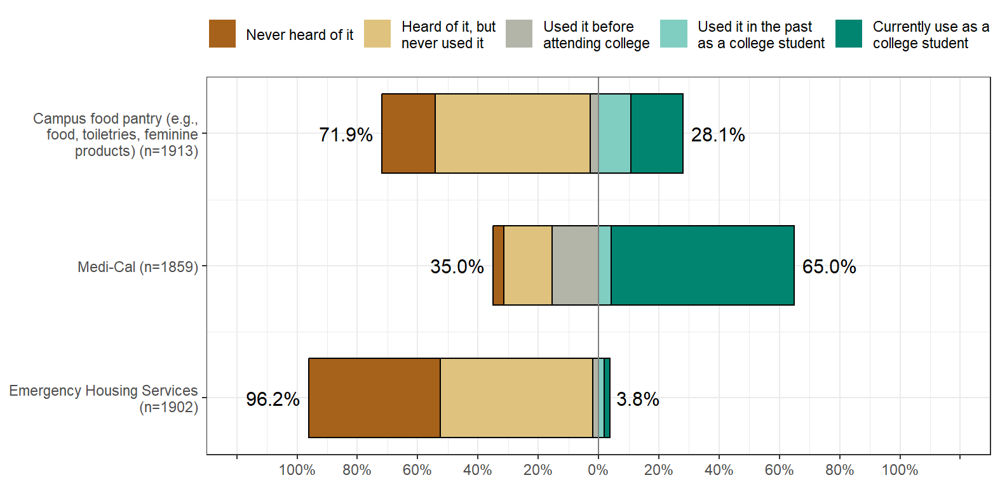
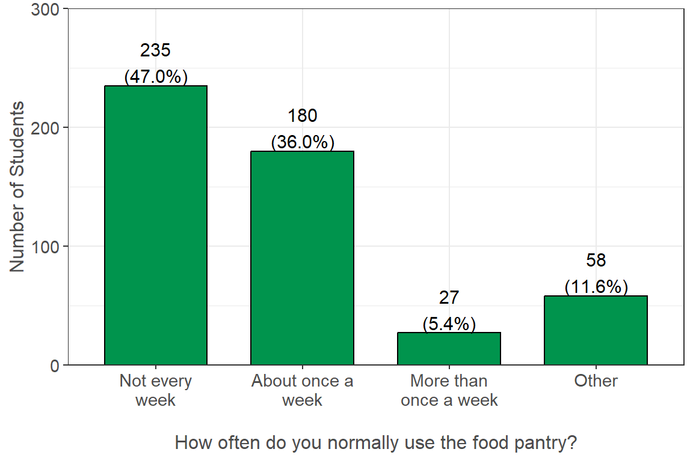
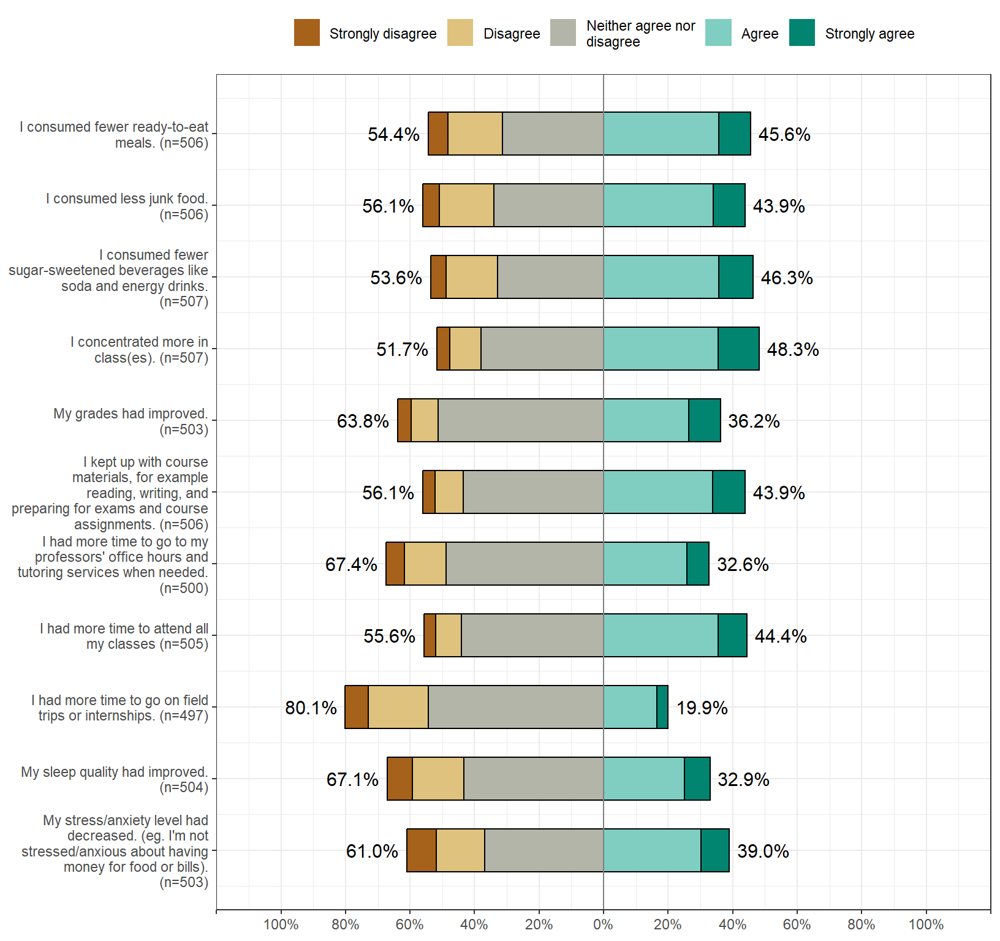
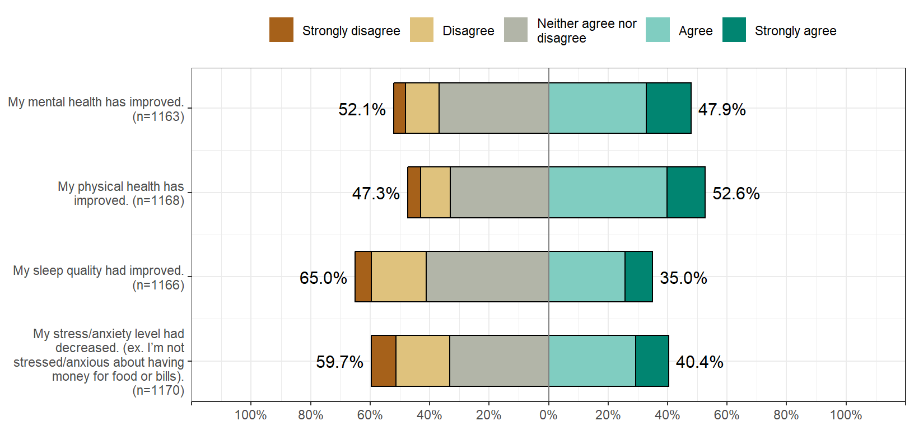

Other Basic Needs
Basic Needs
Food Pantry - Impact
For the following questions, please choose how much you agree or disagree with the impact campus food pantries has or had on your life. While I utilized campus food pantry/pantries:


Food Pantry - Barrier
What are the reasons for you to not go to campus food pantries? (Select all that apply).
| Measure | Yes (%) |
|---|---|
| I feel other students need the food more than I do. (n = 1267) | 386 (30.5%) |
| I don't need to use campus food pantries. (n = 1267) | 332 (26.2%) |
| I am not aware of any campus food pantries or local food banks. (n = 1267) | 262 (20.7%) |
| Inconvenient to access due to lack of transportation or out-of-the way location. (n = 1267) | 213 (16.8%) |
| Inconvenient times of operation/limited pantry hours. (n = 1267) | 210 (16.6%) |
| I am embarrassed or scared to go to the campus food pantries or local food banks. (n = 1267) | 208 (16.4%) |
| I feel uncomfortable about receiving help with basic needs, like food. (n = 1267) | 155 (12.2%) |
| Other (n = 1267) | 74 (5.8%) |
| I would think less of myself If I went to campus food pantries or local food banks. (n = 1267) | 57 (4.5%) |
| I don't want my friends to find out I go to campus food pantries or local food banks. (n = 1267) | 43 (3.4%) |
| There are no food pantries close to campus or my residence. (n = 1267) | 39 (3.1%) |
| My friends and peers would think less of me if I went to campus table(food pantries or local food banks. (n = 1267) | 30 (2.4%) |
| My family doesn't want me to go to campus food pantries or local food banks. (n = 1267) | 27 (2.1%) |
| I do not believe in using campus food pantries or local food banks. (n = 1267) | 4 (0.3%) |
Medi-Cal - Impact
For the following questions, please choose how much you agree or disagree with the impact Medi-Cal has or had on your life. Knowing that you have Medi-Cal:

Medi-Cal - Barriers
What are the reasons you do not have Medi-Cal or have never used Medi-Cal? (Select all that apply).
| Measure | Yes (%) |
|---|---|
| I do not know what Medi-Cal is or I think I already have health insurance. (n = 526) | 145 (27.6%) |
| I don’t need Medi-Cal. (n = 526) | 139 (26.4%) |
| I do not think I am eligible for Medi-Cal. (n = 526) | 117 (22.2%) |
| Other (n = 526) | 95 (18.1%) |
| The Medi-Cal application is too difficult to complete. (n = 526) | 39 (7.4%) |
| No time to complete the Medi-Cal application/Medi-Cal application is too long. (n = 526) | 33 (6.3%) |
| I only need medical services at the student health center associated with my campus. (n = 526) | 21 (4.0%) |
| I feel uncomfortable about receiving help with basic needs, like food. (n = 526) | 8 (1.5%) |
| I have heard from other students that it is not worth my time because I wont be eligible. (n = 526) | 7 (1.3%) |
| My family or household does not want me to apply for Medi-Cal. (n = 526) | 5 (1.0%) |
| I am embarrassed or ashamed to apply for Medi-Cal. (n = 526) | 5 (1.0%) |
| I would think less of myself If I went to campus food pantries or local food banks. (n = 526) | 2 (0.4%) |
| I don’t believe in social services like Medi-Cal, CalFresh, WIC, or Welfare/Cash Aid. (n = 526) | 1 (0.2%) |
| I don't want my friends to find out I go to campus food pantries or local food banks. (n = 526) | 0 (0.0%) |
| My friends and peers would think less of me if I went to campus table(food pantries or local food banks. (n = 526) | 0 (0.0%) |
Emergency Housing Services - Impact
For the following questions, please choose how much you agree or disagree with the impact Emergency Housing Services have or had on your life. Because I received Emergency Housing Services:

Emergency Housing Services - Barriers
What are the reasons you do not use Emergency Housing Services or have never used Emergency Housing Services? (Select all that apply)
| Measure | Yes (%) |
|---|---|
| I don’t need Emergency Housing Services (n = 1698) | 1062 (62.5%) |
| I was not aware that my campus had Emergency Housing Services like grants and housing placements in an emergency. (n = 1698) | 628 (37.0%) |
| Other (n = 1698) | 60 (3.5%) |
| No time to complete the Emergency Housing application or contact the Emergency Housing Staff. (n = 1698) | 59 (3.5%) |
| I feel uncomfortable about receiving help with basic needs, like housing. (n = 1698) | 54 (3.2%) |
| I am embarrassed or ashamed to apply for Emergency Housing Services. (n = 1698) | 46 (2.7%) |
| The emergency housing grant/money is not enough to support what I need, so not worth my time to apply for it. (n = 1698) | 40 (2.4%) |
| The Emergency Housing Services application is too difficult to complete. (n = 1698) | 33 (1.9%) |
| I would think less of myself if I applied for Emergency Housing Services. (n = 1698) | 26 (1.5%) |
| I don't want my friends to find out that I applied for emergency housing services. (n = 1698) | 17 (1.0%) |
| My friends and peers would think less of me if I applied for emergency housing services. (n = 1698) | 14 (0.8%) |
| I do not believe in social services like Emergency Housing Services, Medi-Cal, CalFresh, or Welfare/Cash Aid. (n = 1698) | 1 (0.1%) |